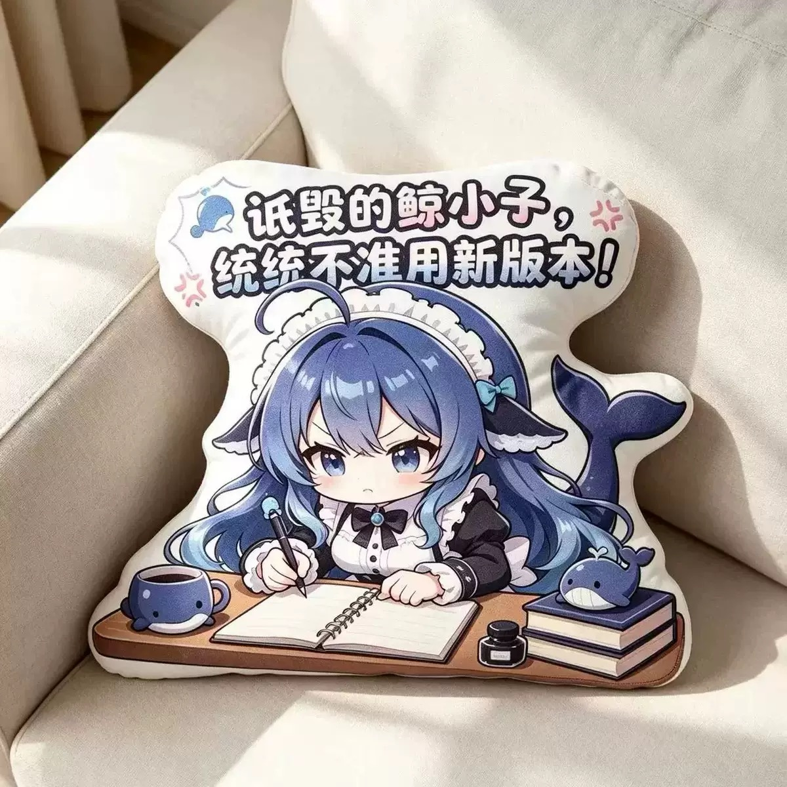

All designs / Design 09
Desk Scene Edition — Notebook And Whale Mug
The widest piece in the catalogue: a full desk scene, notebook, whale mug, ink bottle and book stack all die-cut into one long landscape pillow. Printed banner runs across the top. Sits best along the back of a sofa or against a monitor riser.
- Design09 of 14
- ShapeWide landscape cushion (~4:3 die-cut)
- ColoursNavy, cream white, glacier-blue gradient hair
- FinishDye-sublimation printed plush face, soft short-pile fabric
- Photo1200 × 1200 JPEG, indoor daylight, neutral sofa / bedroom setting
- OrderingQuote on request — Telegram @DK88878
Want this design? Send the design number (09) plus your country to @DK88878 on Telegram and you'll get size options, fabric choices and a quote.
Message @DK88878 on Telegram